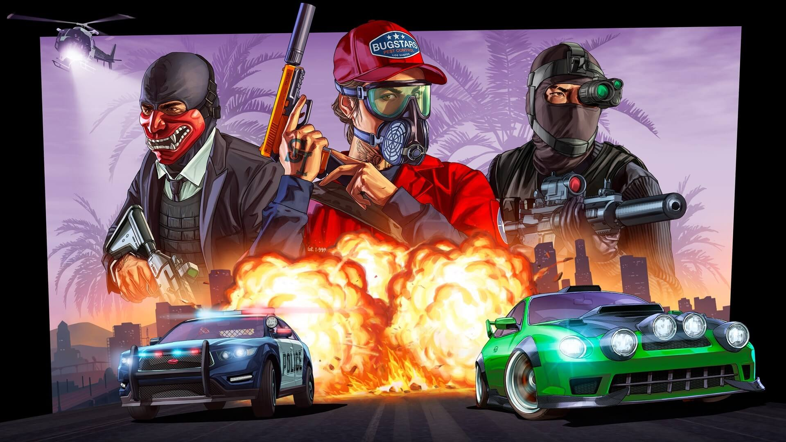
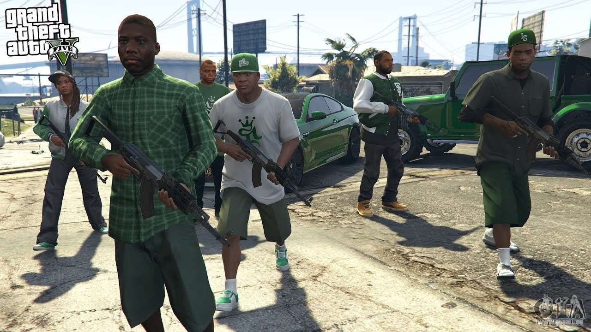
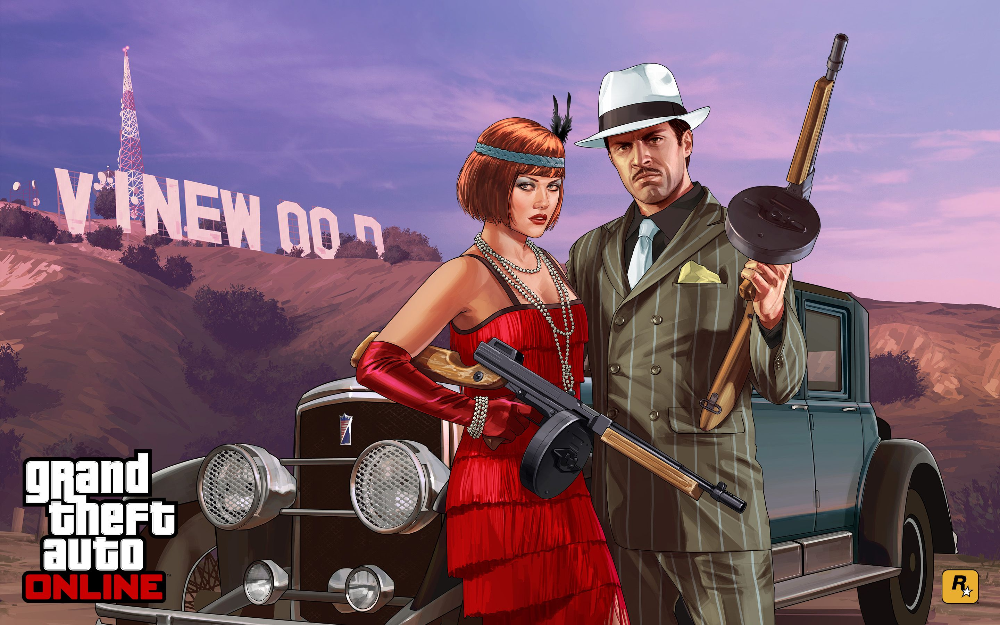
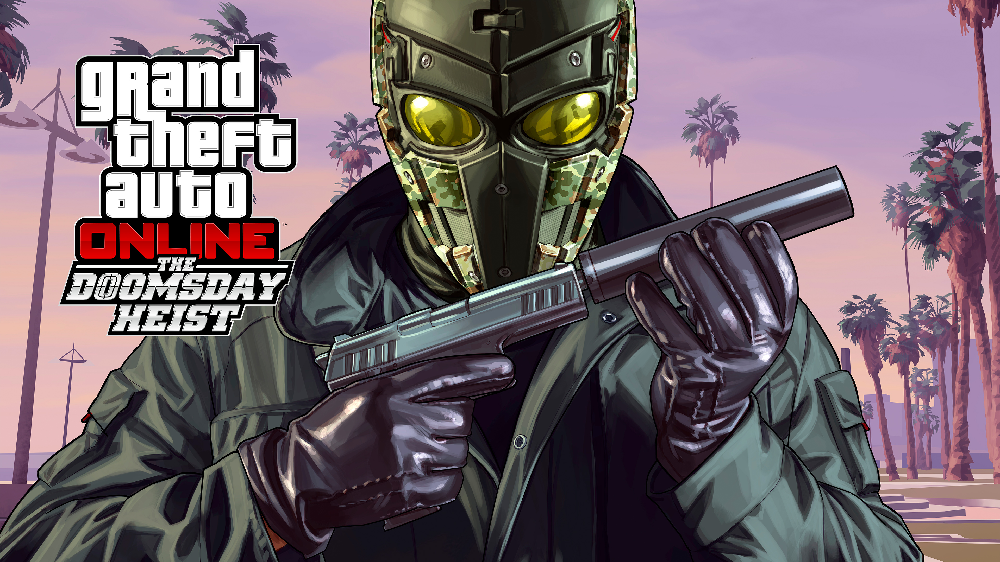
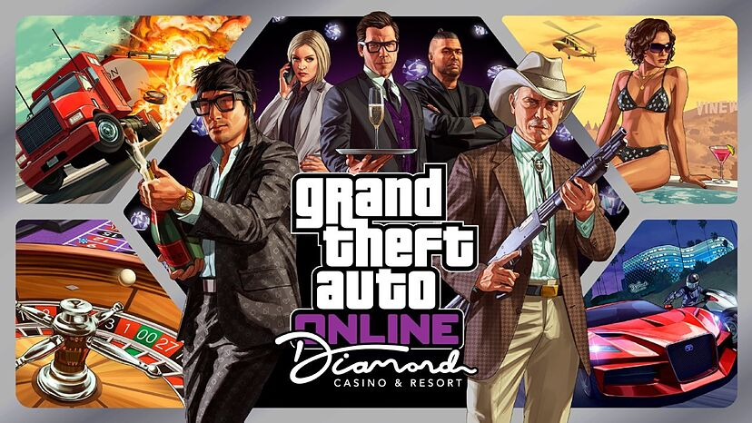

Grand Theft Auto Online (GTA Online)

Grand Theft Auto Online (GTA Online) es la experiencia multijugador en línea de Grand Theft Auto V, lanzada en octubre de 2013 como parte del juego base. Desarrollado por Rockstar North, GTA Online ha evolucionado para convertirse en un fenómeno por derecho propio, ofreciendo a los jugadores una extensa y dinámica experiencia en línea ambientada en el mundo de Los Santos.
Modo Multijugador Expansivo:
GTA Online permite a los jugadores sumergirse en un mundo persistente y compartido, donde pueden interactuar con otros jugadores en tiempo real. Ya sea participando en misiones cooperativas, compitiendo en desafíos o simplemente explorando el vasto entorno, la experiencia multijugador ofrece una variedad de actividades.

Creación de Personajes y Progresión:
Al comenzar en GTA Online, los jugadores crean su propio personaje personalizado y eligen su estilo de vida criminal. A medida que completan misiones y desafíos, ganan experiencia y dinero virtual, permitiéndoles mejorar sus habilidades, adquirir propiedades, vehículos y equipo.

Empresas y Propiedades:
Una característica distintiva de GTA Online es la posibilidad de adquirir empresas y propiedades. Los jugadores pueden convertirse en propietarios de clubes nocturnos, garajes de lujo, empresas de contrabando y más. Estas inversiones no solo proporcionan ingresos virtuales, sino que también ofrecen nuevas oportunidades de juego.
Contenido en Constante Evolución:
Rockstar ha mantenido el interés de la comunidad mediante la introducción constante de nuevo contenido. Actualizaciones periódicas añaden vehículos, armas, misiones y modos de juego, manteniendo fresca la experiencia de juego y ofreciendo a los jugadores motivos para regresar regularmente.

Eventos Especiales y Modos de Juego Únicos:
GTA Online organiza eventos especiales y modos de juego únicos de forma regular. Estos eventos pueden incluir competiciones, carreras temáticas, actividades de doble de dinero y RP (puntos de reputación) y más. Los eventos especiales a menudo coinciden con días festivos del mundo real o celebraciones temáticas.
